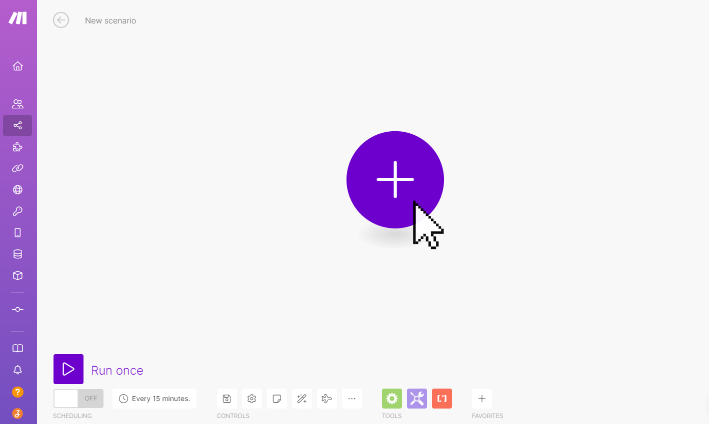
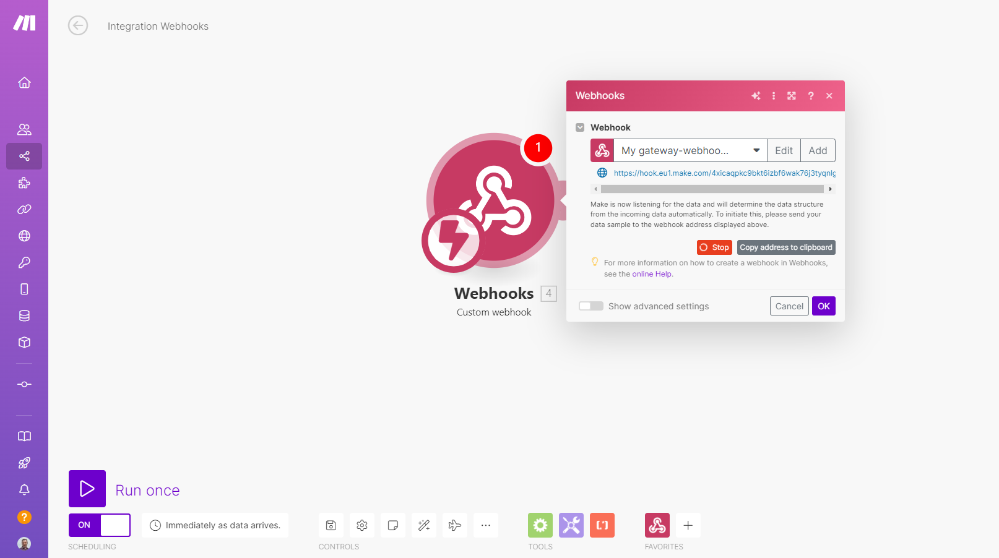
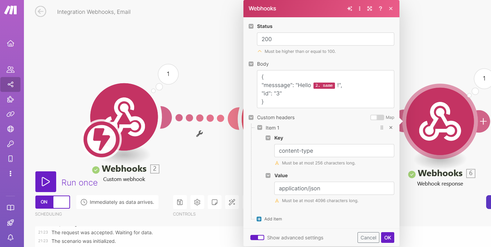
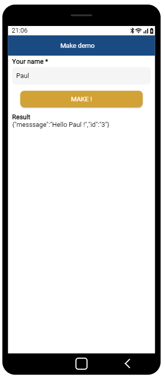

Make
Make is an online automation tool that connects your applications and services to automate repetitive tasks without the need for coding.
Available from the Enterprise plan.
It works by linking two or more applications to create automations, called Scenarios, which trigger an action in one application when something happens in another.
Zyllio offers a native integration with Make that allows:
- Triggering scenarios from Zyllio (via Webhook),
- Updating Zyllio data from Make scenarios.
Prerequisites
A valid Make account is required to connect the Make and Zyllio solutions.
Additionally, a subscription to the Zyllio Enterprise plan is needed to activate this feature.
Configuration
The Make integration can be activated from the Settings tab / Integration / Make by enabling the Enable button as shown in this image.

Webhook Make
Creating the Make Scenario
Once connected to Make, create a scenario.

Then create a Custom Webhook module as follows:

Click on the Add button. Once the Webhook module is configured, simply click on the Copy address to clipboard button.

Creating the Screen
This screen prompts the user for their name to send it to Make via the Webhook.
The screen includes:
- A Text input field whose variable is called Your name.
- A button that triggers the Make Webhook via an action.
- A LabelText component that displays the response from the Webhook stored in the variable Result.

Creating the Action
Select the button, then click on its Action property. Drag and drop the Make Webhook action and configure the action as follows:
- Set the Variable property to Result.
- Set the Webhook URL property to the URL of your Webhook copied from your Make scenario.
- The Request data contains a data item called name that refers to the variable Your name.
Thus, the Make Webhook will receive the parameter of the user's name entered in the Zyllio screen.

Testing the Webhook
Return to the Make scenario and click on the Run once button.

The Make scenario is waiting for a call from Zyllio. From Zyllio, go into simulation mode and click on the Make button to invoke the Make Webhook.

Once the Webhook is executed, Make automatically detects the transmitted data: here, the data name has the value Paul.

The Make scenario is now connected to Zyllio, and additional modules can be added (Mail, Notion, Slack, etc.).
Configuring a Webhook Response (Optional)
Make allows the Webhook to return a customized response in text or JSON format. To do this, you need to use the Webhook Response module at the end of the scenario, as illustrated below.

This module allows you to specify a response in the body property as follows:

Here, the response returns Hello! followed by the name (name) passed as a parameter in the initial Webhook.
Retrieving the Response in a Zyllio Screen
Response in Text Format
If the Webhook Response defines text in its body property, the response format is text.
Thus, the Zyllio Make Webhook action will receive text and will be stored in the Variable. Therefore, no additional configuration is needed in the Zyllio action. Here is the result.

Response in JSON Format
If the Webhook Response defines a JSON structure in its body property, the response format is JSON.
To return a JSON message, the Webhook Response module must define a Content-Type header equal to application/json.

Result in the Zyllio screen.

To extract a subset of the JSON message, simply use the Response Expression property. To extract each individual data item from the JSON message, use the JSON Query formula. Learn more about Response Expressions and JSON Query: REST Integration.